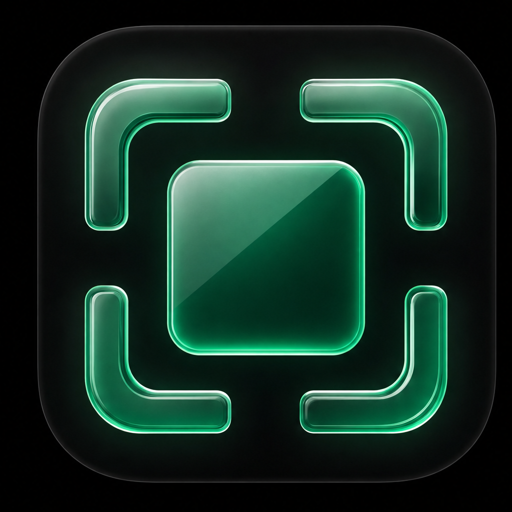
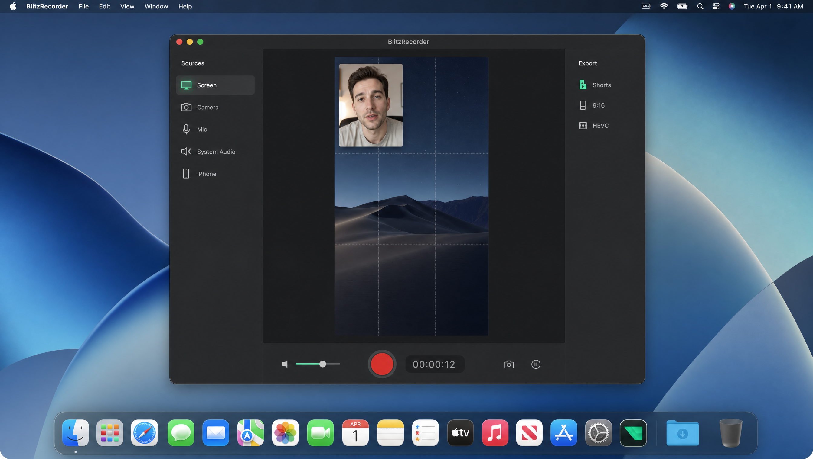
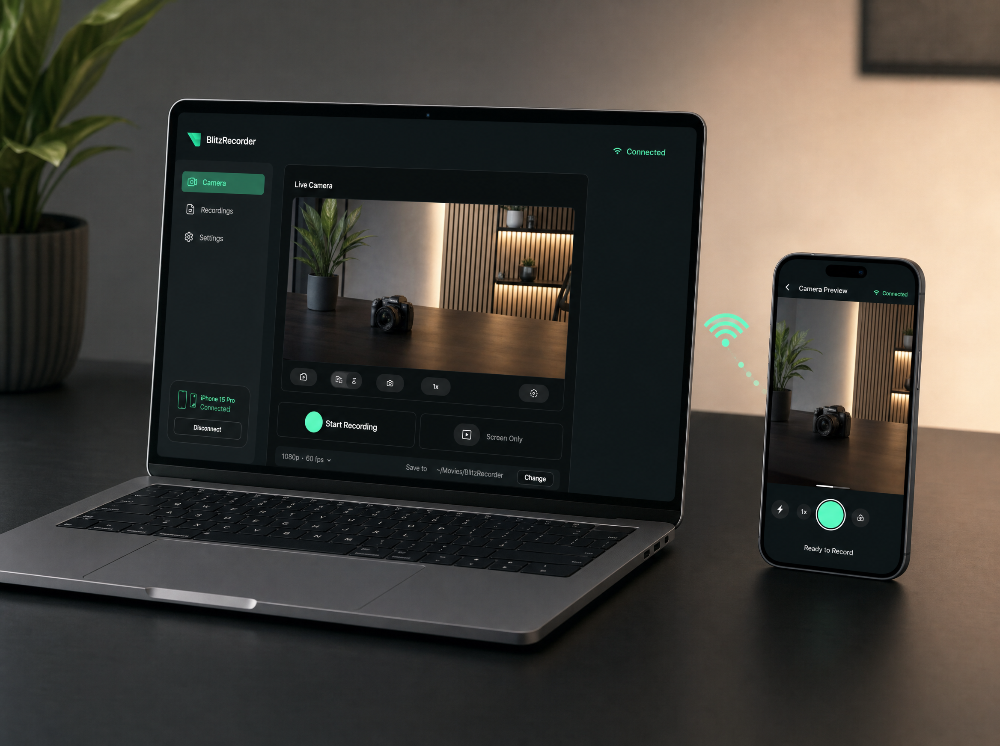

Tout part du Mac
Écran, micro, son système, webcam. Tu choisis quoi capturer, tu cadres, tu zoomes.

BlitzRecorder TéléchargerEnregistreur Mac · caméra iPhone
Écran, micro, son du Mac, iPhone si tu veux. Une prise, un fichier pour TikTok, Reels ou YouTube.
3 exports offerts. Puis 4,99 $ / mois. Inclus si tu es abonné BlitzReels.

Avant
Avec BlitzRecorder
Fonctions
Pas de suite de montage. Pas de cloud. Tu filmes, tu sors le fichier.
Écran, micro, son système, webcam. Tu choisis quoi capturer, tu cadres, tu zoomes.
Code à 6 chiffres, image sur le Mac, réglages à distance. Le fichier arrive chez toi.
Vertical ou horizontal. Face cam en petit, écran en grand.
Micro et son Mac sur des pistes séparées. Pause sans tout décaler.
Transcription, fichiers renommés, titre suggéré en local si tu veux.
Rien ne part en ligne. Tes vidéos restent chez toi.
BlitzRecorder Camera
Deuxième app sur l'App Store. Même wifi, code d'appairage, image sur le Mac. Zoom, focus, expo, balance des blancs, stabilisation, torche.

Prix
3 exports offerts pour tester l'app. Ensuite BlitzRecorder Pro à 4,99 $ / mois sur l'App Store. Abonnés BlitzReels éligibles : Pro débloqué en te connectant.
FAQ
3 exports pour tester. Après, 4,99 $ / mois si tu postes souvent.
Télécharger